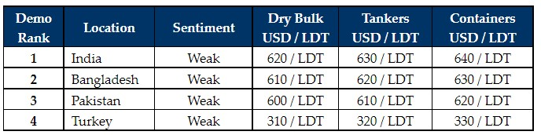

inWeekly Demolition Reports06/06/2022

As sales dry up into sub-continent markets due to firming freight rates and plummeting vessel prices, the industry is (once again and expectedly) entering a lull, especially as the traditionally quieter summer / monsoon months descend.
At this time, we do not anticipate Ship Owners or Cash Buyers to offload any of their inventories (if vessels are even available) at these reduced rates and End Buyers still remain reluctant to commit units at any firm numbers being demanded, such is the volatility in the market at present.
There have not been any sales to benchmark this recent fall in levels, but depreciating currencies and plummeting steel plates prices seem to have knocked over USD 100/LDT off across the sub-continent & Turkish markets and sentiments do appear to be shredded as nerves remain frayed.
Accordingly, there have been some opportunistic numbers being dished around, far below where most in the industry believe prices should be at present, and as expected, no Ship Owner or Cash Buyer is presently willing to entertain such offers in the low USD 600s/LDT (perhaps even lower), as recycling markets stabilize for the time-being.
A gradual rebound is eventually expected, especially as supply remains extremely restricted and yards are more than empty, but just how far and how soon levels will return remains anyone’s guess.
Overall, despite yard capacity improving across the sub-continent, freight sectors too have been performing admirably (Tankers, Containers and Dry), thereby resulting in a suffocation of resales to global Recyclers. Evidence of this even presents itself at the waterfront, as local port positions are starting to dwindle with marginal arrivals this week.
As such, given the historical tenacity of these pricing trends, we can expect levels and demand to pick up as we head towards the third quarter of the year, with most in the industry hoping for a sustained recovery..
For week 22 of 2022, GMS demo rankings / pricing for the week are as below.

📄 Download PDF: June-3-2022.pdfSource: GMS,Inc. ,https://www.gmsinc.net/gms_new/index.php/web